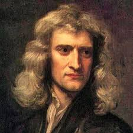

Most of Newtons contributions were started before the age of 26
-
1642
- Newton was born on christmas day, almost as a gift to the scientific community.
-
1657
- Educated at The King's School, Gantham. He spents years 12-17 at this school and learned Greek
and Latin, as well as recieved a foundation for his mathematical prowess.
-
1661
- Admitted into Trinity College, Cambridge, upon recommendation. He eventually recieved a
scholarship which allowed him to persue a masters degree at the college.
-
1665
- Discovered the generalised binomial theorem, and began working on a mathematical discipline
which would later become calculus.
-
1687
- On what could be called a dare, developed the laws of motion and published
Principia Mathematica. This work is heralded as the most important advancement in
mathematics and physics from the scientific revolution.
"If I have seen further it is by standing on the shoulders of giants."
- Sir Isaac Newton